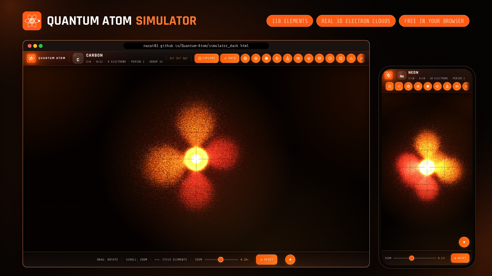
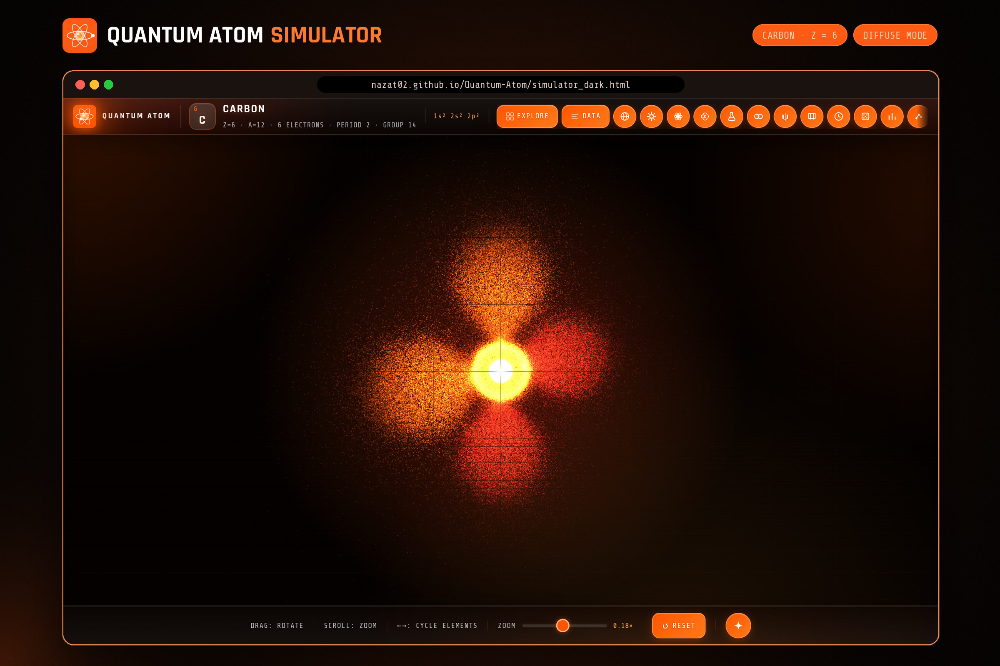
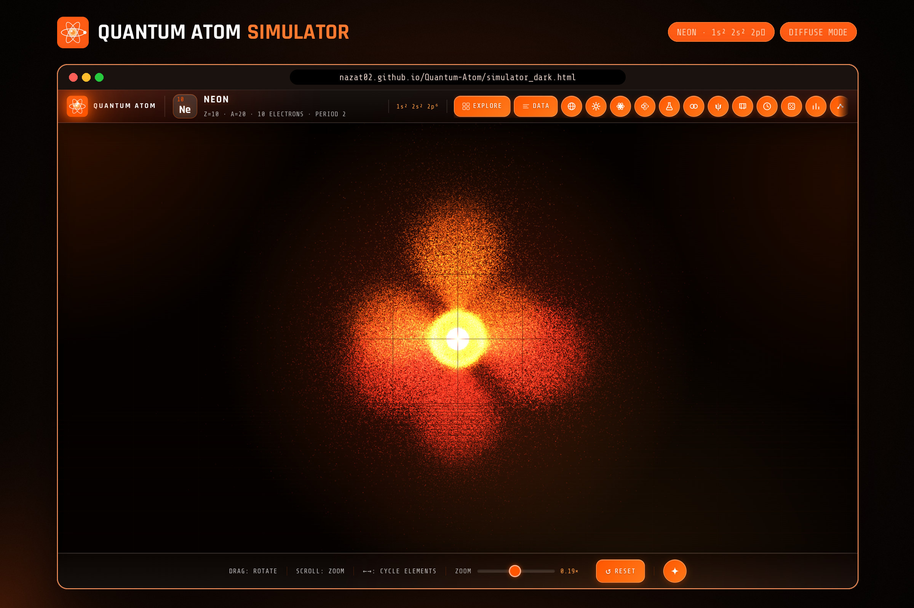
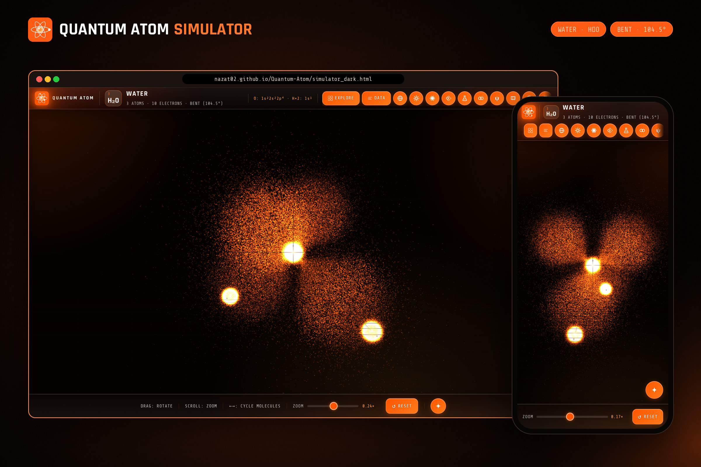
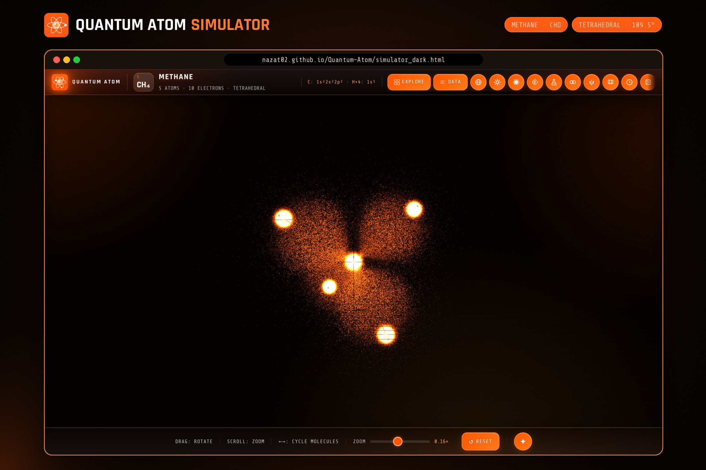
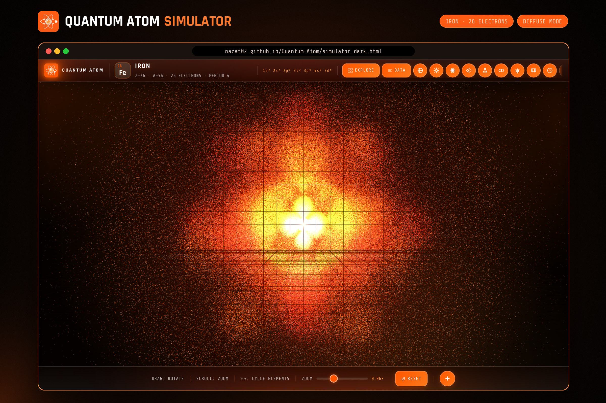
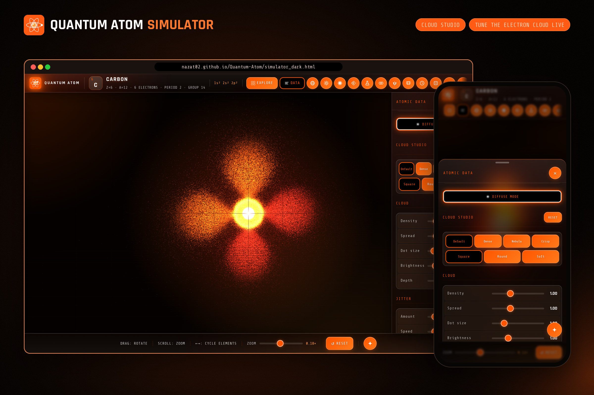
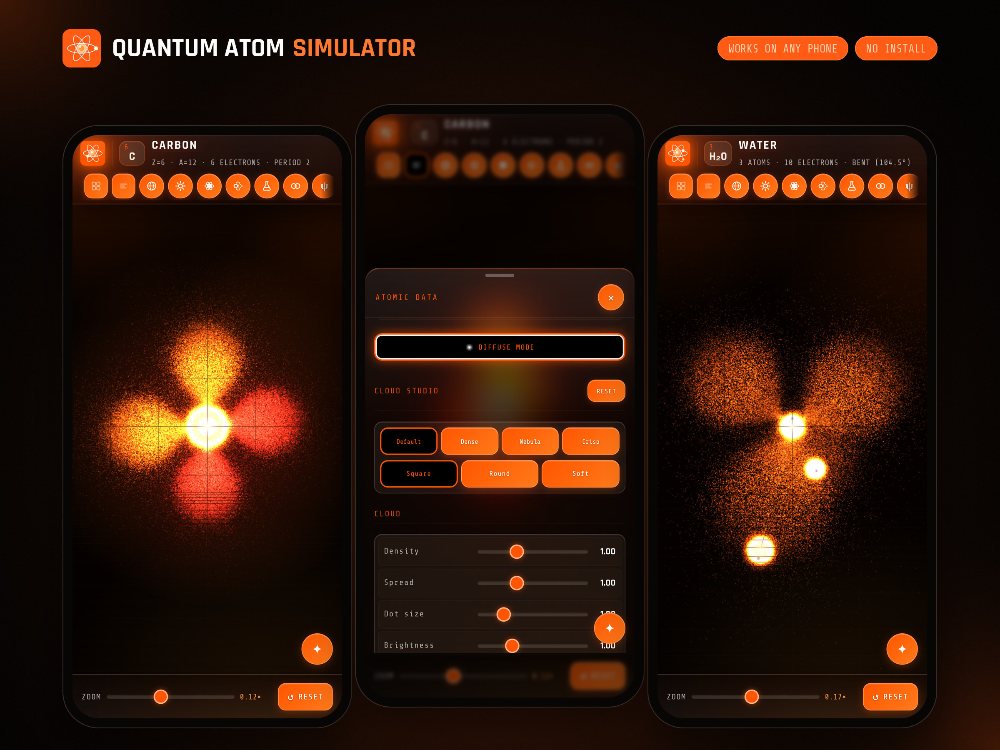
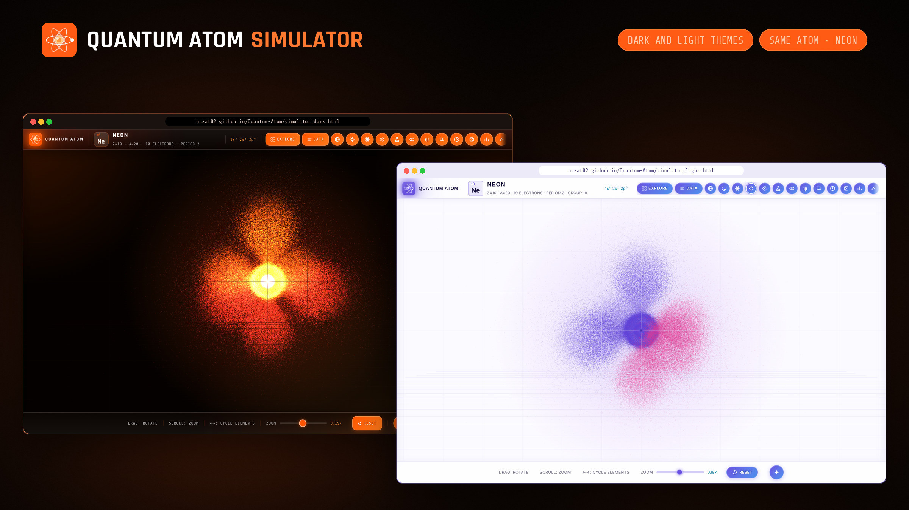

Everything you can see, touch, and breathe is made of atoms.
Yet for centuries, no one could see inside one.
This simulator changes that — rendering electron orbitals, molecular bonds, and the nucleus itself in real-time 3D.
The Basics
An atom is the smallest unit of ordinary matter that retains the chemical properties of an element. The word comes from the Greek atomos — meaning "uncuttable" — coined by Democritus around 400 BCE, who theorized that all matter was made of indivisible particles in an infinite void.
He was wrong about one thing: atoms are absolutely cuttable. Every atom consists of a dense central nucleus — packed with positively charged protons and neutral neutrons — surrounded by a cloud of negatively charged electrons that define its chemistry, its bonds, and its behavior.
The nucleus is extraordinarily dense. If an atom were the size of a football stadium, the nucleus would be a marble at the center. Everything else is mostly empty space — or more precisely, a quantum probability field where electrons exist as smeared-out wave functions rather than definite point particles.
It took humanity over 2,400 years — from Democritus to Schrödinger — to develop an accurate picture of atomic structure. Each model was a revolution that shattered the previous one. The journey is one of the greatest intellectual adventures in human history.
History of Atomic Theory
Every model of the atom was once the cutting edge of human knowledge — and every model was eventually proved incomplete. This is how science works.
Model 1 of 2
Niels Bohr's 1913 model was the first to successfully predict the hydrogen spectrum. It was a triumph — and a stepping stone to something far stranger.
Model 2 of 2
Quantum mechanics replaced orbits with orbitals — not paths, but probability clouds defined by wavefunctions. Electrons don't travel in circles. They exist everywhere at once, with some places more probable than others.
In quantum mechanics, the state of an electron is described by a wavefunction ψ(r, θ, φ). The wavefunction itself has no direct physical meaning — but its square, |ψ|², gives the probability density of finding the electron at any point in space. This is Born's rule.
An orbital is not an orbit. It is a three-dimensional region of space where an electron is most likely to be found — typically defined as the volume containing 90% of the electron probability. The shapes of these orbitals — spheres, dumbbells, cloverleaves, toroids — emerge directly from the mathematics of the Schrödinger equation.
This means electrons are fundamentally delocalized. An electron in a 2p orbital isn't "spinning around the nucleus" — it genuinely has some probability of being in one lobe, the other lobe, or anywhere in between, simultaneously. Only when you measure it does it "collapse" to a definite position.
This weirdness is not a flaw — it is the source of everything: chemical bonds, solid matter, semiconductors, DNA, life itself. The quantum atom is why chemistry works.
Side by Side
Both models agree on energy levels for hydrogen. But quantum mechanics goes far deeper — explaining shapes, bonding, chemistry, and ultimately all of physical reality.
Why It Matters
The quantum mechanical model isn't just an academic exercise. It is the foundation of every technology that defines the modern world.
In Their Own Words
Purpose
Textbook diagrams of orbitals are flat. Verbal descriptions are abstract. Neither prepares you for the strangeness and beauty of quantum reality. Seeing changes everything.
Simulator Capabilities
Orbital Geometry
Each orbital type has a distinct geometry arising from the angular part of the wavefunction. These shapes determine everything about how atoms bond and react.
The s-orbital is a perfect sphere of electron probability centered on the nucleus. Every direction is equally likely — the angular wavefunction Y₀⁰ is a constant. What changes with shell number is the radial distribution: higher n orbitals have nodes (spherical shells of zero probability) and peak density farther from the nucleus. The 2s orbital has one radial node; 3s has two.
P-orbitals have two lobes extending in opposite directions along one axis. The angular wavefunction Y₁ᵐ is proportional to cos(θ) or sin(θ)·cos/sin(φ), which gives the characteristic dumbbell shape. There are three degenerate p-orbitals in each shell — px, py, pz — oriented along the three Cartesian axes. A nodal plane passes through the nucleus perpendicular to the lobe axis.
D-orbitals come in five distinct geometries. Four of them (dxy, dxz, dyz, dx²-y²) are four-lobe cloverleaf shapes between or along the axes. The fifth — dz² — is unique: two polar lobes along the z-axis plus a distinctive equatorial torus (donut ring) in the xy-plane. D-orbitals are responsible for the rich chemistry of transition metals and their colorful compounds.
F-orbitals are the most geometrically complex shapes the simulator renders — each sub-orbital has six or eight lobes arranged around the nucleus rather than the simple two- or four-lobe patterns of p and d. There are seven degenerate f-orbitals per shell: fz³, fxz², fyz², fxyz, fz(x²-y²), fx(x²-3y²), fy(3x²-y²). They first appear at 4f, where they're responsible for the lanthanide contraction — the reason 4f electrons sit spatially inside the already-filled 6s shell rather than extending beyond it. 5f plays the same role for the actinides.
The dz² orbital is chemically notorious. Unlike the other four d-orbitals, it has two axial lobes along z and a donut-shaped ring of probability density in the equatorial plane. This unique geometry arises because dz² is technically a linear combination of d(z²-x²) and d(z²-y²). It plays a starring role in octahedral crystal field splitting and the axial bonding of square planar complexes like cisplatin.
Molecule Mode
Flip from Atoms to Molecules and individual electron clouds fuse into real chemical structures. Bond angles and geometry come from genuine VSEPR theory, not hard-coded guesses — the shapes you see are the shapes molecules actually take.
Build Mode
A third mode alongside Atoms and Molecules: type the name of any element or compound — organic, inorganic, simple, or complex — and the simulator resolves it into real 3D geometry. Not limited to the 140+ curated molecules; this is open-ended.
Companion Tool
The Nucleus Explorer does one thing no textbook diagram can: lets you zoom in forever. Start at the whole nucleus and keep scrolling in — reached from the nucleus icon inside the Simulator's toolbar.
Element Coverage
All 118 elements from Hydrogen (Z=1) to Oganesson (Z=118) — the complete periodic table, spanning all 7 periods and every s, p, d, and f orbital filling in the Aufbau sequence.
Under the Hood
The simulator translates quantum mechanical mathematics directly into real-time 3D graphics. Three steps from Schrödinger to screen.
Picture a student, the night before a chemistry exam. Her textbook shows the atom as a dot with tiny planets circling it. She memorises it, because that is what the page asks of her. It is wrong, and nobody ever showed her what the real thing looks like.
Now picture the same night with one difference: a link. She taps it. No install, no account, no fee. An electron cloud blooms on her screen: a sphere, a dumbbell, a cloverleaf. She drags it around with a fingertip. For the first time, chemistry is not a list to memorise. It is a place she can walk around in.
That link only works for her if it stays free, and staying free takes more than good intentions. Every orbital here is computed from real quantum mechanics, not drawn. Every element, molecule and nucleus took long nights to get right.
So instead of putting a price on the picture, we are doing something older: asking the people who already felt the “oh, wow” to help the next person feel it.
One electron on its own is just a spark. Together, they are what makes an atom hold its shape.
Cannot contribute? That is completely fine. Send the link to someone who is still picturing tiny planets, or give it a star on GitHub. That helps just as much.
Gallery
Real captures from the simulator in Diffuse mode, where the whole atom is drawn as one soft probability cloud. Tap a picture to open it full size.









118 elements. 10 orbital types. Real-time 3D.
No installation. No account. Just open it and explore.